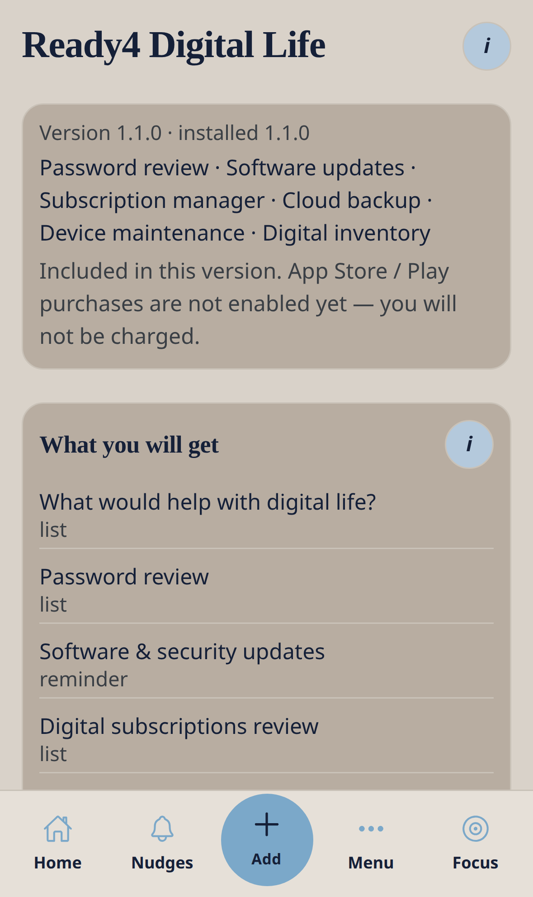
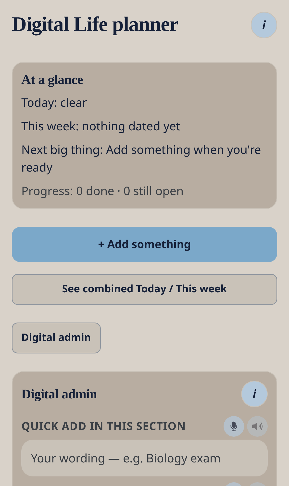

Paid catalogue (no charge on TestFlight while billing is off)
Ready4 Digital Life
Passwords, updates, subscriptions, backups and device health — digital admin in small steps.
Nudge me Ready v3 · 0.3.1 · Ready4 pack · Data stays on this phone
What this pack is for
Password review · Software updates · Subscription manager · Cloud backup · Device maintenance · Digital inventory
How to find it
- Open Menu → Ready4Packs (or Home → Explore).
- Open Ready4 Digital Life.
- Read the preview, then tap install. On TestFlight you will not be charged if billing is off.
- Editable items appear in Nudges and What’s coming up.


What you will get
Everything stays editable. Skip, snooze or remove without penalty.
| Template | Type | Notes |
|---|---|---|
| What would help with digital life? | list | Pick one area. Open that tool next. |
| Password review | list | Update critical passwords when you can. Use a password manager if you have one. |
| Software & security updates | reminder | Phone, laptop, tablet — update when convenient. |
| Digital subscriptions review | list | Keep, pause or cancel — your choice. |
| Backup check | reminder | Confirm photos and important files are backing up. |
| Device health checklist | list | Repeats monthly |
| Digital inventory note | note | Devices, licences, important account emails — for your own records. |
Everyday workflow
- Install the pack once.
- Open a template from Nudges and change the title, day or checklist to match your life.
- Use Later, Sorted, Smaller or Ask on the list.
- From Add, use the extra pack actions if you need a new item in this area.
- Open the pack planner (Home pack tile, or Menu if shown) for today / this week in this pack.
- Optional: turn on Push so dated items can nudge the lock screen.

What Add shows after install
These choices appear under the six everyday paths only after this pack is installed.
| Path | Extra action |
|---|---|
| Plan it | Digital life — what would help? |
| Do it | Password review |
| Remember it | Software updates |
| Buy & pay | Digital subscriptions |
| Do it | Backup check |
Kind actions
Later, Sorted, Smaller, Ask, skip and remove never shame you. Progress over perfection.
Remove the pack
From the pack preview you can remove unedited items only, or everything from this pack. Unrelated nudges stay.